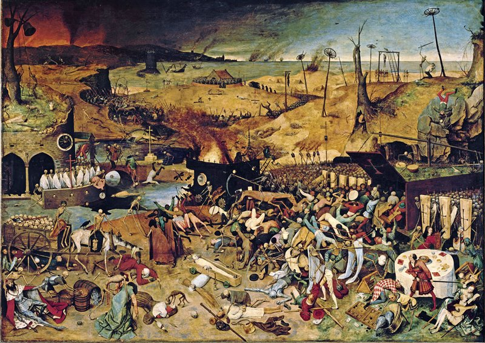

indice:v
Muerte Negra
Durante los años 1347 a 1350, Europa “y todo el mundo conocido” fue testigo de una feroz pandemia de
peste, que sería denominada siglos más tarde como “La Muerte Negra”. La humanidad yahabía conocido
plagas y epidemias pero la pandemia de 1348, por sus características históricas marcó un antes y un
después en muchos aspectos. Como causa, como un factor más, o como simplemente consecuencia de
la crisis de la Edad Media, provocó gran impacto en sus protagonistas y en generaciones siguientes.
Impacto e interés que perduran hasta nuestros días, en los que aún no han sido desvelados muchos
interrogantes relacionados con ella. Efectivamente, la pandemia de mediados del siglo XIV ha sido, y es,
objeto de diversos estudios desde múltiples puntos de vista (científicos, demográficos, económicos,
literarios, artísticos, religiosos, sociales, etc.) con resultados en muchas ocasiones contradictorios, que
abrensiemprenuevas puertas a la investigación.

tipo de virus
La forma de la enfermedad más corriente era la peste bubónica primaria, pero había otras variantes: la peste septicémica, en la cual el contagio pasaba a la sangre, lo que se manifestaba en forma de visibles manchas oscuras en la piel –de ahí el nombre de «muerte negra» que recibió la epidemia–, y la peste neumónica
video relacionado al tema